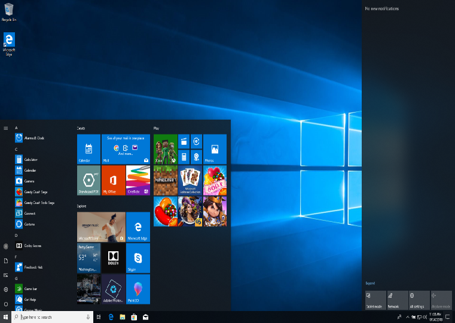

Desktop

Zaslon dobrodošlice

Windows 10 ili projekt Threshold objavljen je 29. srpnja 2015. godine. Njegov glavni cilj je bilo ujedinjenje svih Windows platformi u softveru. Windows treba postati jezgra, koja se prilagođava uređaju na kojem se izvodi. Tvrtka Microsoft je uspjela u ovoj zamisli, naime, Windows 10 se mogao koristiti na računalu, mobilnom telefonu, igraćoj konzoli, tabletu i serveru. Iako je njegov prethodnik postigao to isto, arhitektura sustava nije bila međusobno ista, samo izgled i funkcije. Windows 10 je u početku svog razvoja uzeo ono najbolje iz Windows 7 (njegovu jednostavnost korištenja) i Windows 8 operacijskih sustava (prilagođenost za dodir). Windows 10 se ažurirao postepeno, s mnogo manjih ažuriranja, no povremeno su bila objavljivana veća ažuriranja koja su nazvana ažuriranjima dodataka (npr. Anniversary update – ažuriranje godišnjice). Tvrtka Microsoft je izjavila da je ovo zadnja verzija operacijskog sustava Windows, zbog toga što se operacijski sustav Windows više ne smatra komadom softvera nego servisom, koji će se konstantno ažurirati i dobivati nove mogućnosti i sadržaje. Windows 10 je naslijedio trgovinu aplikacija od svog prethodnika, a omogućio je pokretanje tih aplikacija u prozorima, umjesto preko cijelog ekrana. Općenito su svi elementi modernog Metro izgleda bili prisutni u manjoj mjeri, ali su ipak ostali prisutni radi konzistentnosti. S operacijskim sustavom Windows 10 su se razvile brojne tehnologije, neke od njih su: Continuum, koji je omogućavao Windows 10 mobilnim telefonima korištenje one prave računalne verzije sustava, uz miš i tipkovnicu; te nove Univerzalne Windows-ove aplikacije (UWP) koje su se mogle pokretati i na računalu i na mobilnom uređaju, a čak teoretski i na Xbox-u i HoloLens naočalama za augmentiranu stvarnost. Kupnja aplikacije na jednoj platformi se prenosi na sve ostale, što korisnicima donosi uštede. Pri samom objavljivanju, Windows 10 je imao neke nove funkcije, kao što su: Akcijski centar s desne strane, novi redizajnirani Start izbornik kombinacijom stilova triju prethodnika, zatim Windows Snap koji sada može podijeliti prozore na četvrtine ekrana, više radnih površina, nova Upravljačka ploča slična onoj iz operacijskog sustava Windows 8, otključavanje licem i otiskom prsta preko tehnologije Windows Hello, snimanje ekrana je postalo sastavni dio operacijskog sustava, Windows Defender je potpuno integriran, a kasnije postaje Windows Defender sigurnosni centar, HEVC, FLAC i Matroska kodeci su dodani u WMP, razvijen DirectX za igre i 3D modeliranje, i na kraju, razvijeno je tzv. Moderno korisničko sučelje. Važno je napomenuti da je Windows 10 sa svojim postupnim ažuriranjima u svakoj međuverziji dobivao nove mogućnosti i funkcije. Postoji 5 verzija Windows 10 operacijskog sustava: Windows 10 Home, Windows 10 Pro, Windows 10 Enterprise, Windows 10 Education i Windows 10 Mobile, koji sada u potpunosti dijeli ARM dio koda za svojom verzijom za računala. Iako je razvoj operacijskog sustava Windows 10 Mobile u potpunosti prekinut, to je bio prvi pravi jednakopravni mobilni operacijski sustav sa Windows-ovom računalnom verzijom. Kasnije je objavljena verzija Windows 10 S, koja je spiritualni nasljednik Windows-a RT, zato što može pokretati samo aplikacije s Microsoft Store-a (Windows Store 2017. godine mijenja ime u Microsoft Store). Naravno, postojala je i serverska verzija Windows Server 2016, koja zadržava ažuriranje starog načina, pa je njen nasljednik Windows Server 2019, koji je ujedno i najnovija inačica serverskog Microsoft softvera. Kao što je navedeno, Windows 10 se ažurirao mnoštvom manjih ažuriranja te nekoliko većih ažuriranja. Tako je osnovna verzija koja je objavljena kao Windows 10 sadržavala već spomenute promjene. Nakon nje, u studenom 2015. godine objavljuje se Ažuriranje za studeni s mnoštvom popravaka. Godine 2016. objavljuje se Ažuriranje godišnjice koje je donijelo najviše ispravki u odnosu na prethodne međuverzije, te je učinilo Windows 10 puno stabilnijim u odnosu na prije.
Windows 10 Ažuriranje za kreativce iz travnja 2017. godine donosi neke nove aplikacije za kreatore, kao npr. Bojanje 3D. Dok Jesensko ažuriranje za kreativce iz listopada 2017. godine nadalje omogućava kreativnim pojedincima nove mogućnosti. Ažuriranje iz travnja 2018. godine je donijelo mnoštvo ispravaka, te integrira sve veći broj elemenata Modernog sučelja u operacijski sustav Windows 10. Posljednje objavljeno ažuriranje dodataka je Ažuriranje 21H1. Windows 10 je uveo i pojam forsiranih ažuriranja, što znači da korisnici nisu u mogućnosti u potpunosti zaustaviti nadgradnje, eventualno ih mogu odgoditi na određeni period, duljina perioda ovisi o verziji Windows-a 10 koju korisnik posjeduje. Od tradicionalnih Microsoftovih alata, Windows 10 sadrži posljednju verziju IE, a to je verzija 11, a WMP je na verziji 12. Razvoj oba ova alata je završen, a Microsoft je napravio zamjenu za sve tradicionalne alate, a zamjene se temelje na UWP platformi. Tako npr. Bojanje 3D mijenja tradicionalno Bojanje (Paint), UWP kalkulator mijenja stari, Groove glazba mijenja WMP, UWP aplikacija Fotografije mijenja stari Windows preglednik fotografija, i na koncu, Microsoft Edge ili projekt Spartan mijenja IE, iako se IE nalazi u sustavu Windows 10 zbog kompatibilnosti. Od posebnih verzija, razvijena je verzija Windows 10 IoT, koja je stvorena kao zamjena za Windows Embedded 2009. Razvoj operacijskog sustava Windows 10 još uvijek traje, te se on neprestano razvija. Windows 10 je u veljači 2019. godine preuzeo dominantnu ulogu u postotku korištenja operacijskih sustava, skinuvši Windows 7 s trona, te je on posljednji dovršeni operacijski sustav tvrtke Microsoft. Podrška za ovaj operacijski sustav još uvijek traje i datum njenog prestanka nije poznat.
Predstavljen: 2015.
Arhitektura: 64-bitna i 32-bitna
Podrška: Traje, nije najavljen kraj podrške.
Stranica je kreirana u sklopu kolegija Informatički Projekt 1 na Fakultetu prirodoslovnih matematičkih i odgojnih znanosti Mostar.
FPMOZ© 2021